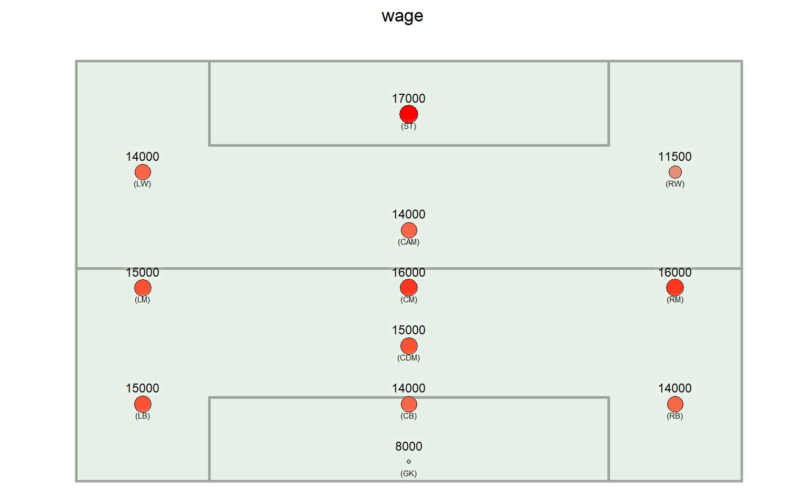
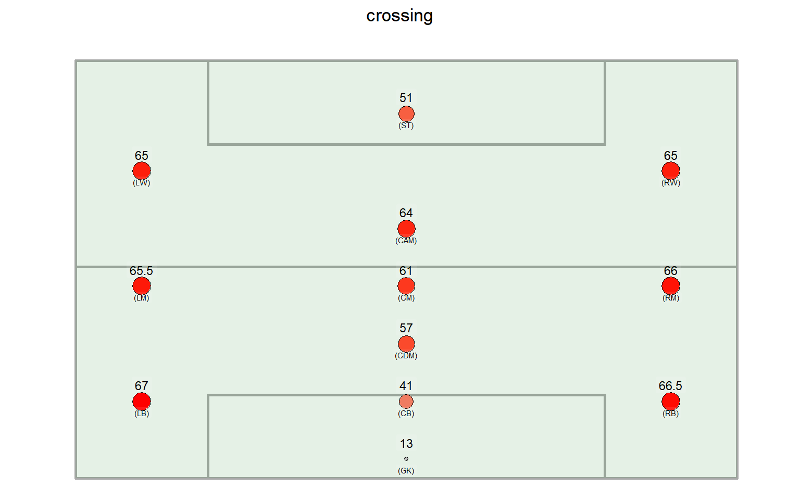
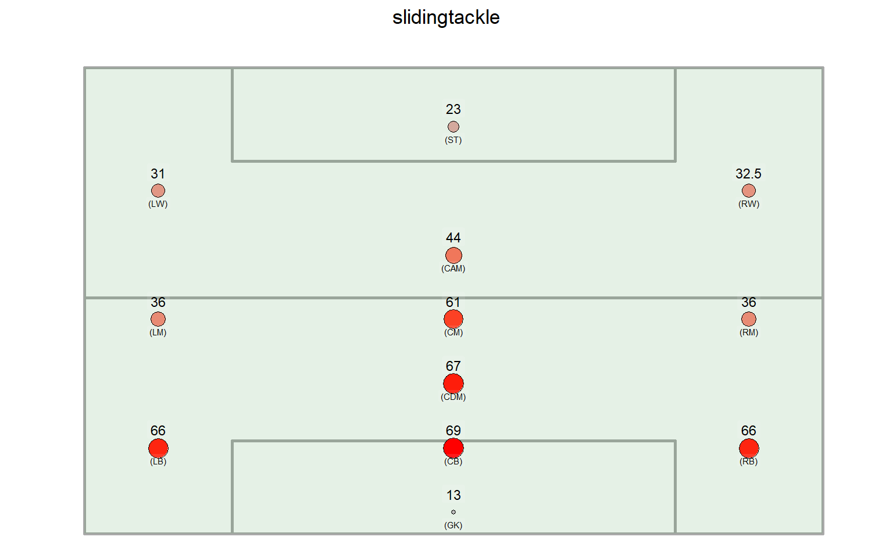
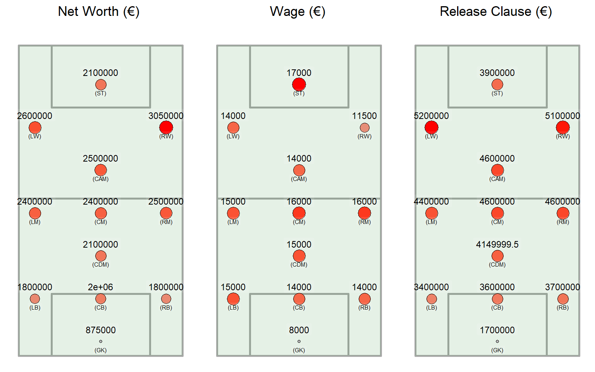

Positions
Tiago
2025-03-05
Attributes overview
This section presents the numerical attributes of the players divided by position. For each position the attributes were aggregated by MEDIAN to prevent outliers from affecting the results. The attribute “height” is measured in centimeters (cm), the “weight” is measured in kilograms (kg), the financial attributes (“net_worth”, “wage” and “releaseclause”) are measured in euros (€) and the age attributes are measured in years. The remaining attributes are measured by a score ranging from 0 to 100.
height
weight
net_worth
releaseclause
overallrating
potential

wage

crossing

finishing
headingaccuracy
shortpassing
volleys
dribbling
curve
fk_accuracy
longpassing

ballcontrol
acceleration
sprintspeed
agility
reactions
balance
shotpower
jumping
stamina
strength
longshots

aggression
interceptions
vision
penalties
composure
defensiveawareness
standingtackle
slidingtackle

gk_diving
gk_handling
gk_kicking
gk_positioning
gk_reflexes
contract_duration
age_hire
age_end_contract
current_age
While there are many attributes, the following sections will delve into specific attribute sets that will be discussed.
Physical attributes
- Goalkeepers (GK) have the highest heights and weights among the positions;
- Strikers (ST) and defenders (CB) have similar body attributes, being among the largest, heaviest and strongest. In general, these are players in whom physicality is an important factor for ball tackles and offensive or defensive aerial plays;
- Central Defensive Midfielders (CDM) are also similar to the positions mentioned above;
- Attacking players, with the exception of Strikers (CAM, RW, LW), and midfielders (RM, LM) are smaller, lighter and less strong. This characteristic may be due to the need for agile players in these positions.
Finnancial attributes

- In financial terms, there is not much variation between the positions, with the exception of goalkeepers (GK);
- In all measures, goalkeepers (GK) have the lowest value, with a large difference from the other positions;
- There is an inversion between the wing players (RW, LW), since the players on the left, despite being worth less, have a higher salary than the right wingers;
- Again in relation to the wingers (RW, LW), these are the most valuable positions and have the highest release clause, but not the highest salary, which is that of the strikers (ST).
Deffensive attributes
- As expected, the closer to the defensive goal, the higher the defensive attributes among the outfield players;
- Centerbacks (CB) and Center defensive midfielders (CDM) have the best defensive median, followed by defensive side players (RB, LB) and midfielders (CM).
Speed attributes
- Speed, acceleration and agility are essential attributes, especially for wing players;
- As expected, these players (RW, LW, RM, LM, RB, LB) have the highest scores;
- With the exception of goalkeepers (GK), central defenders have the lowest scores in these attributes;
- Speed attributes seem to contrast with physical attributes, as the smallest players are those who have the greatest agility, speed and acceleration.
Finishing attributes
- As expected, the closer the attacking goal, the higher the finishing attributes;
- Among the defensive players, the central defenders (CB) have scores significantly lower than the wing defenders (RB, LB). This can be explained by the fact that the players on the wings tend to support the attacking plays more and therefore need to develop these skills.
Crossing attributes
- The attributes related to crossing demonstrate a contrast between two parties, those who make the cross and those who finish the play;
- Strikers (ST) and central defenders (CB) are better at jumping as well as heading accuracy;
- On the other hand, the other positions are better at crossing than finishing;
- The jumping attribute appears to be directly proportional to the height attribute.